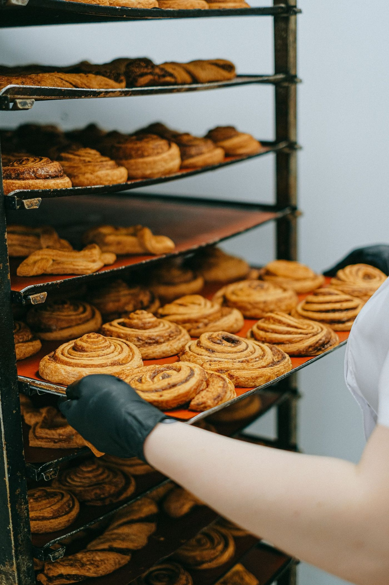

Amarillo, Texas
Vegan, sugar-free, gluten-free, and old-fashioned treats
A family-owned bakery in Amarillo offering vegan, sugar-free, gluten-free, old-fashioned, nut-free, dye-free, and low-carb treats, with takeout and outdoor seating.

Amarillo, Texas
A family-owned bakery in Amarillo offering vegan, sugar-free, gluten-free, old-fashioned, nut-free, dye-free, and low-carb treats, with takeout and outdoor seating.
Blue Crane Bakery is a family-owned bakery in Amarillo. Its treats include vegan, sugar-free, gluten-free, old-fashioned, nut-free, dye-free, and low-carb options, with named items including the Dolly Bar, sopapilla cheesecake, hand pies, pop-tarts, and oatmeal cream pies. The bakery offers takeout and outdoor seating, and orders go through Facebook or phone, per the business site. The bakery is also reached by email at bluecranebakery66@gmail.com.


3223 SW 6th Ave, Amarillo, TX 79106
Tuesday to Friday 10:00 AM to 5:30 PM; Saturday 10:00 AM to 5:00 PM; Monday and Sunday closed